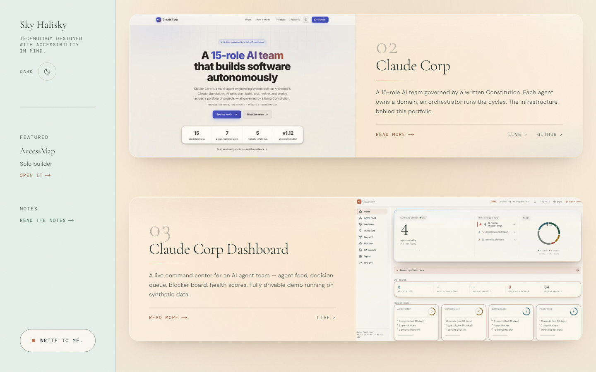
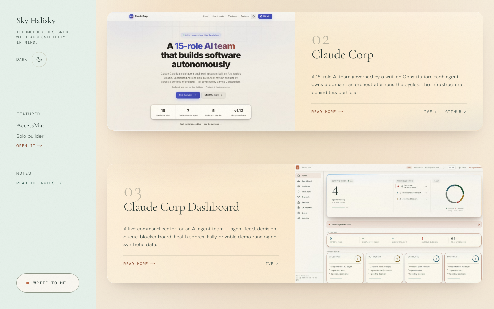
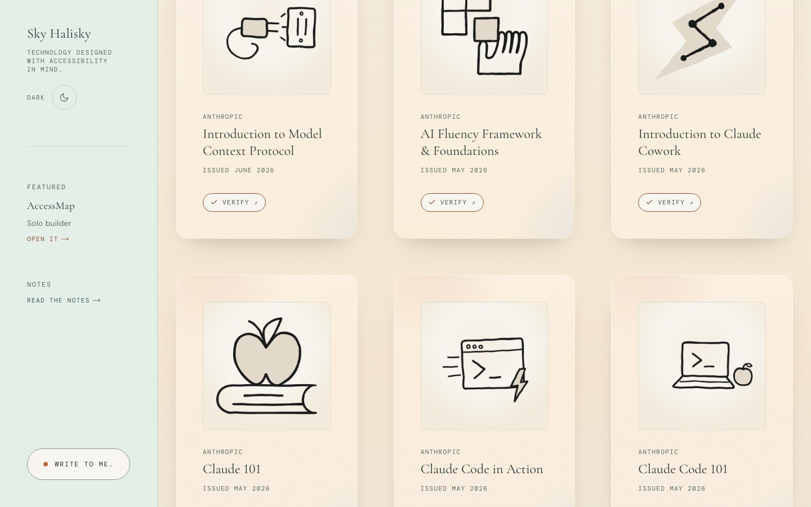
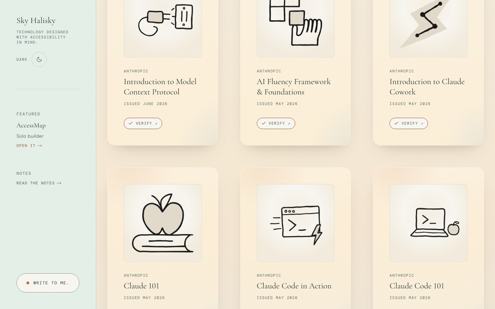
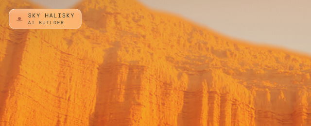

Two declarations change, light theme only:
the pane tint rgb(252 251 255 / .42) → rgb(255 252 244 / .42)
and the specular glint rgb(206 228 244 / .26) → rgb(250 226 196 / .26).
Dark glass is byte-untouched (already warm at rgb(38 31 24 / .52)).
This completes UP-19, which warmed the rim and left a warm rim around a blue-white pane.




The ledger leads with the chip as “the first pixel of every arrival.” It is — but the chip's glass floats over the cinematic desert frame, which is already deep orange, so a 42%-alpha white shifted 6/255 toward warm is invisible there. Only 3.6% of this frame's pixels change at all. Judge the item on the cards above, not here.

| Measure | Result |
|---|---|
| Text nodes on glass measured in BOTH states | 75 |
| New AA failures introduced | 0 |
| Direction of every contrast delta | positive (warm is very slightly better) |
| Largest ratio movement | +0.028 |
| Lowest ratio after warm | 5.237 “Expo” (floor 4.5) |
| Max per-channel pixel shift | 6 / 255 |
| Frame area changed — work cards / certificates / chip | 29.4% / 40.6% / 3.6% |
| axe strict, 16 routes × 2 themes | 0 violations |
The decision is taste, not safety. The change is broad in area and shallow in depth: a 6/255 hue shift over roughly a third of the glass-bearing viewport, with no a11y cost in either direction. The case for it is that the estate currently wears two temperatures of glass in one material. The case against it is that a cool cast in glass is defensible material realism — real glass is slightly blue — which is exactly why this is gated to your eye.